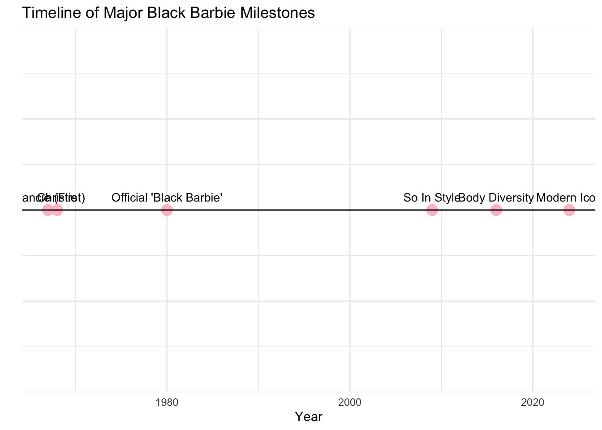

The projects should be numbered consecutively (i.e., in the order in which you began them), and should include for each project a description of the goal, the product (computer program, hand graph, computer graph, etc.), the data, and some interpretation. Reports must be reproducible and of high quality in terms of writing, grammar, presentation, etc.
# Load library
library(ggplot2)
# Data: Years of major Black Barbie milestones
years <- c(1967, 1968, 1980, 2009, 2016, 2024)
milestones <- c("Francie (First)", "Christie", "Official 'Black Barbie'",
"So In Style", "Body Diversity", "Modern Icon")
# Create data frame
barbie_data <- data.frame(years, milestones)
# Create timeline plot
ggplot(barbie_data, aes(x = years, y = 0)) +
geom_point(color = "pink", size = 4) +
geom_text(aes(label = milestones),
vjust = -1, size = 3.5) +
geom_hline(yintercept = 0) +
theme_minimal() +
labs(title = "Timeline of Major Black Barbie Milestones",
x = "Year",
y = "") +
theme(axis.text.y = element_blank(),
axis.ticks.y = element_blank())